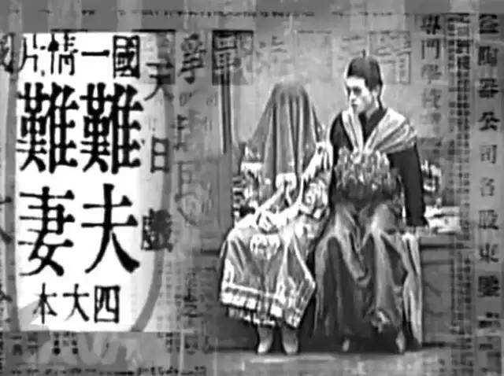
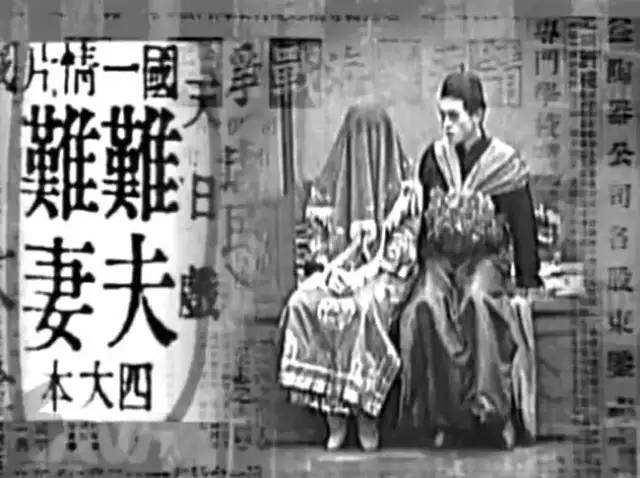

近代中国电影源起于"影戏",因讲求戏剧性、注重教化性而被视为"旧戏"的延伸和"落后"之物.事实上,作为西方现代文明与中国传统文化相融合的新事物,因影戏而生成的"新剧",得到了戏剧改良运动所张扬的"写实主义"精神的滋养,因此不仅不是落后的,而且是进步性的.近代中国电影的演变,以"通俗教育"为指归的新剧衰落后,"融戏入影"的中国电影承继和确立了写实主义电影观,并且重新扛起社会教育的大旗,成为中国早期电影人宣扬新文化的窗口.

概述
近代中国电影源起于"影戏",因讲求戏剧性、注重教化性而被视为"旧戏"的延伸和"落后"之物.事实上,作为西方现代文明与中国传统文化相融合的新事物,因影戏而生成的"新剧",得到了戏剧改良运动所张扬的"写实主义"精神的滋养,因此不仅不是落后的,而且是进步性的.近代中国电影的演变,以"通俗教育"为指归的新剧衰落后,"融戏入影"的中国电影承继和确立了写实主义电影观,并且重新扛起社会教育的大旗,成为中国早期电影人宣扬新文化的窗口.
 

中国第一部无声黑白短故事片《难夫难妻》诞生于1913年，张石川与郑正秋共同导演，美国人依什尔摄影，丁楚鹤等主演。
本片的故事发生在广东潮州地区。讲述了乾坤两家，分别有一个儿子髻令和一个女儿标梅。双方父母都极力促成两家联姻，也不在乎双方子女的心愿，于是请媒人说合。经过媒人的撮合，两家决定择吉日完婚。经过一番热闹繁琐的旧式婚俗仪式后，髻令和标梅这对从未见过面的新人拜了天地，被送进洞房，无奈之中成了夫妻。
《难夫难妻》是中国电影拓荒者之一郑正秋的第一个电影剧本，也是中国电影史上第一部电影剧作。”它以社会讽刺剧的形式，揭露并批判了封建婚姻的买卖性、盲目性和不合理性，接触到了社会现实生活的内容，主题具有社会意义。影片在上海香港路的露天摄影棚内拍摄，全部角色均由一班文明戏的演员但任，张石川和郑正秋分别指挥摄影机位置的变化和演员的表情动作。从而成为中国最早的电影导演。
由于历史局限，第一部故事短片质量欠佳是可以理解的，但它是土生土长的中国故事片。影片通过一对少男少女在封建买卖婚姻下的不幸命运，抨击了这种制度的不合理，这种主题是可贵的。郑正秋为中国电影片种、样式和创作方法开了个好头。这部影片是中国现代影片的开山之作。
《神女》（Goddess）是吴永刚执导的一部无声电影，由阮玲玉、黎铿主演。
影片讲述了一个为了生活和抚养儿子而出卖肉体的“神女”的悲剧故事。影片于1934年于中国上海上映。
《神女》被国际影坛誉为中国电影黄金年代的最佳默片之一。
二十年代的旧上海，夜幕低垂。一个妓女（阮玲玉饰）等到儿子（黎铿饰）入睡后，便来到街头开始迎送生涯。一夜她为了躲避警察的追捕，误入流氓（章志直饰）的住所，迫不得已屈服于流氓的淫威之下，从此受他操控。为了躲避流氓的敲诈和欺凌，她想另找工作，跳出火坑，但举步维艰，流氓又以卖掉她的儿子为要挟，强迫她继续卖淫。她让儿子上学受教育，但流言蜚语使孩子遭到歧视而失学。正当她想带着儿子远走高飞、开始新生活时，才发现流氓早已偷去她所有的积蓄。忍无可忍之下她杀死流氓，自己也锒铛入狱。
《神女》的故事并没有剧情片的峰回路转，无非讲述一个弱女子面对社会的无奈抗争。她被流氓霸占，被邻居非议，被学校等机构所排斥，最后还被丢进了监牢。某种程度上，它和二十世纪三十年代的许多左翼电影一样，不乏控诉，有些苦情。然而，对暗娼流莺的同情和怜悯，放在中国电影里非常之少见。社会是在进步，可是，同样的困境依然存在，尤其提到妓女，许多人不免还是要戴上有色眼镜，宁可睁只眼闭只眼。反过来，这恐怕也不是人性和人本主义的倒退，而可能是电影题材领域的审查限制所导致，它与社会主义精神文明似乎是背道而驰的一种存在。
《一江春水向东流》是由蔡楚生、郑君里导演并编剧，白杨、陶金、舒绣文、上官云珠等主演的剧情片。该片于1947年在中国上映。该片主要讲述了一个家庭在中国抗日战争巨变之时发生的悲欢离合的故事。
抗战爆发后，蔡楚生积极拍摄了不少反映日寇侵华的电影，蛰居香港仍遭到日军搜捕。他不得不夹杂在难民队伍中流离，辗转于桂林、柳州等地，并于1944年到达陪都重庆。蔡楚生在抗战期间目睹了日军的所作所为，为了揭露这些暴行，鼓舞中国爱国青年，于是他决定创作《一江春水向东流》这部作品。但他不满足于自己逃难期间的所见所闻，于是不顾生活的贫困和身体的虚弱，四处寻访逃难的人民，了解他们的疾苦，还特别注意从报刊中收集文字、照片资料，以补充和丰富自己的生活积累，使影片更符合生活的真实。1946年夏剧本创作完成，他的身体也累垮了，一直低烧咳嗽，于是他请郑君里一起执导这部影片。
该片把抗战前后将近十年间的复杂社会生活，浓缩到一个家庭的遭遇之中，形成了一个曲折动人的故事。以如火如荼的感情，揭示了民族危难关头，整个社会处于纷繁动乱之中，强烈地表达了中国人民的正义呐喊。
《小城之春》是由费穆执导，石羽、李纬、韦伟、张鸿眉主演的一部剧情片。影片讲述了一个已婚女人在丈夫久病不起的情况下再次见到昔日恋人时的故事。该片于1948年上映，1995年，被评选为中国电影90年历史上10部经典作品之一；2005年，被金像奖评为百年百大电影第一名；同时也被英国电影杂志《视与听》846位影评人评为影史TOP250的127名。
1947年时吴祖光鼓励李天济写电影剧本，叫他先写《小城之春》，当时的剧名叫《苦恋》，后来又改成《迷失的爱情》。写完后《小城之春》的剧本拿给国泰、大同的导演看了，都不要，吴祖光又托曹禺再送“文华”试试。一直到半年多以后，费穆要了这个剧本。大约半年后，《小城之春》公映了。
《小城之春》投合了当时人们的苦闷心情。在艺术表现上，这部影片有较成功的探索。早期的中国电影往往写事多于写人写情，而这部影片独辟蹊径，它的人物不多，情节简单，将镜头深入人物复杂矛盾的心灵，揭示微妙的情感关系，是一部典型的心理抒情片。此外，它吸取了中国古典诗词的传统，借物喻人，以景抒情，富有诗情画意，显示了费穆导演的艺术特色，是中国电影史上不可多得的艺术珍品。
《南征北战》是上海电影制片厂摄制的战争片，由成荫、汤晓丹联合执导，陈戈、冯喆、张瑞芳等主演，于1952年上映。该片改编自话剧《战线》，讲述了解放战争初期，在华东战场上，人民解放军在敌强我弱的形势下，正确运用毛泽东运动战的战略思想，消灭敌人取得胜利的故事。
该片是新中国成立以后拍摄的第一部军事片。
为了深入生活，在生活中找到创作依据，剧组参加了华东解放军英模大会，加演对剧本时代背景和人物形象的理解。而后，演员们分成三个组进一步体验生活：演老区群众的去山东农村，与老乡们同吃同住；演解放军的下连队；演国民党将领的去俘虏营观察国民党军官。刚从香港回来的冯喆，为缩短与角色的距离，他下部队体验每天上操场苦练刺杀，还在大冷天下水游泳改变体形。导演成荫根据角色配置和演员实际情况，把高营长定位为部队里的知识分子干部，确定了既儒雅又英武的基调。
《南征北战》是新中国银幕史上不朽的战争史诗，大量的经典段落和台词至今让人津津乐道。它叙事清晰，充满艺术张力。人物形象鲜明，而且没有简单地脸谱化，很有生活气息。与同时期其他战争题材影片相比，该片在战争场面的气势、战役的规模、表现战略决策和军事思想等方面，都是空前的，堪称新中国电影史上第一部具有战争史诗韵味的影片。
《青春之歌》是北京电影制片厂出品的革命历史题材剧情片，由崔嵬、陈怀皑执导，谢芳主演，于1959年上映。该片改编自杨沫的同名长篇小说，讲述了知识女性林道静几经周折与磨难最终走上革命道路的故事。
最早提出把小说《青春之歌》搬到银幕的是上海电影制片厂的导演、杨沫的妹夫蒋君超。在小说单行本出版前，他就表达了改编的愿望并得到了杨沫的同意。蒋于1958年3月完成了剧本初稿，上影厂也将其列入拍摄计划，由沈浮执导，演员也做了安排。但是，由于小说单行本出版后产生巨大影响，改编工作也受到各方面关注。当时文化界的领导周扬希望杨沫亲自来改编剧本，由杨沫所在单位北京电影制片厂来拍摄。
该片的编导很注意人物出场的火候，讲究气势，严格遵循人物性格的社会性、阶级性、具体性，以富有概括力和表现力的艺术手法，尽可能使得人物出场得到鲜明生动的体现。观众可以从导演给人物出场的艺术处理中体会到导演寓褒贬、分是非的态度。导演在镜头运用上也很有特色，镜头的分切、运用总是突出刻划主人公的思想。该片虽不能把原作一些动人心处包括无遗，但它的完整情、思想与艺术性的高度统一，它表现在不同场面中的宏伟雄壮、慷慨激昂、婉转委曲、清丽抒情，都远非一些平庸的改编可比。用“锦上添花”来评价《青春之歌》的改编是不算过分的。
《城南旧事》，改编自林海音1960年出版的同名短篇小说，由吴贻弓执导，沈洁、郑振瑶、张闽、张丰毅等主演，1983年于中国内地上映。影片透过小女孩英子的目光，讲述了英子在北京生活时发生的三个故事。影片获得第二届马尼拉国际电影节最佳故事片金鹰奖，第三届中国电影金鸡奖最佳导演、最佳女配角、最佳音乐等多项奖项 。
影片根据台湾女作家林海音1960年出版的同名中篇小说改编而成。《城南旧事》首先由北影厂的导演伊明改编成电影文学剧本。原小说分五段写五个人，改编的时候，删去了“兰姨娘”的全部和“驴打滚儿”的后半部。“惠安馆传奇”保持基本完整成为影片的上篇；而“我们看海去”和“驴打滚儿”的前半部及“爸爸的花儿落了”则糅在一起成为一个仍有两段的下篇。
《城南旧事》透过一个小女孩的纯真眼光展示了20世纪20年代老北京的社会风貌，带领观众重温了那个年代普通百姓的生活。该片为中国的散文电影提供了一个范本，影片注重意象的唯美风格也代表了20世纪80年代一批导演的创作倾向。影片在结构上犹具独创性，编导排除了由开端、发展、高潮、结局所组成的情节线索，以“淡淡的哀愁，浓浓的相思”为基调，采用串珠式的结构方式，串连起英子与疯女秀贞、英子与小偷、英子与乳母宋妈3段并无因果关系的故事。这样的结构使影片具有多棱镜的功能，从不同的角度映照出20世纪20年代的具体历史风貌，形成了一种以心理情绪为内容主体、以画面与声音造型为表现形式的散文体影片。
《黄土地》，是改编自柯蓝的小说《深谷回声》的一部文艺题材的电影。由陈凯歌执导，王学圻、薛白主演。影片讲述了陕北农村贫苦女孩翠巧，自小由爹爹作主定下娃娃亲，她无法摆脱厄运，只得借助"信天游"的歌声，抒发内心的痛苦。
该片获1985年第五届中国电影金鸡奖最佳摄影奖，1985年瑞士第三十八届洛迦诺国际电影节银豹奖。
《黄土地》是中国电影的双峰陈凯歌、张艺谋的“会师”之作，日后，两人分别延续了第五代美学取向并将之推广到全世界的作品。在当时革新了中国电影叙事语言的《黄土地》无疑具有里程碑的意义，它给中国电影带来了新的可能。如果说《一个和八个》是中国第五代导演们的开山之作，那么《黄土地》则是标志着第五代导演真正崛起的电影作品。陈凯歌的《黄土地》在电影风格和语言强烈了形成一种新的影像，并深深影响了整个第五代导演早期的叙事倾向和风格基调。大色块和色觉强烈的摄影、西北黄土地的民俗以及对中国文化的反思性叙事，让中国电影呈现了另一番不同的风貌，也标志着第五代视野不同与以往中国导演的历史视角。